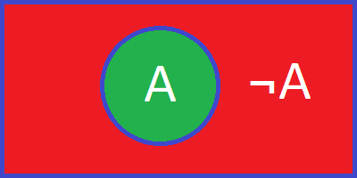

Булева алгебра
Булевой алгеброй называется непустое множество A с двумя бинарными операциями ∧ (аналог конъюнкции), ∨ (аналог дизъюнкции), одной унарной операцией ¬ (аналог отрицания) и двумя выделенными элементами: 0 (или Ложь) и 1 (или Истина) такими, что для любых a, b и c из множества A верны аксиомы ассоциативности, коммутативности, законов поглощения, дистрибутивности, дополнительности.
ассоциативность
- a ∨ ( b ∨ c )=( a ∨ b ) ∨ c
- a ∧ ( b ∧ c )=( a ∧ b ) ∧ c
коммутативность
- a ∨ b = b ∨ a
- a ∧ b = b ∧ a
законы поглощения
- a ∨ ( a ∧ b ) = a
- a ∧ ( a ∨ b ) = a
дистрибутивность
- a ∨ ( b ∧ c ) = ( a ∨ b ) ∧ ( a ∨ c )
- a ∧ ( b ∨ c ) = ( a ∧ b ) ∨ ( a ∧ c )
дополнительность
- a ∨ ¬ a = 1
- a ∧ ¬ a = 0
Логические операции
Логическая операция НЕ. Мнемоническое правило для отрицания звучит так — на выходе будет:
- «1» тогда и только тогда, когда на входе «0»
- «0» тогда и только тогда, когда на входе «1»
Таблица истинности данной операции выглядит следующим образом:
| A | ¬A |
| 0 | 1 |
| 1 | 0 |
Диаграмма Эйлера-Венна для логической операции НЕ выглядит следующим образом:
Логическая операция И. Мнемоническое правило для конъюнкции с любым количеством входов звучит так — на выходе будет:
- «1» тогда и только тогда, когда на всех входах действуют «1»
- «0» тогда и только тогда, когда хотя бы на одном входе действует «0»
Таблица истинности данной операции выглядит следующим образом:
| A | B | A∧B |
| 0 | 0 | 0 |
| 0 | 1 | 0 |
| 1 | 0 | 0 |
| 1 | 1 | 1 |
Диаграмма Эйлера-Венна для логической операции И выглядит следующим образом:
Логическая операция ИЛИ. Мнемоническое правило для дизъюнкции с любым количеством входов звучит так — на выходе будет:
- «1» тогда и только тогда, когда хотя бы на одном входе действует «1»
- «0» тогда и только тогда, когда на всех входах действуют «0»
Таблица истинности данной операции выглядит следующим образом:
| A | B | A∨B |
| 0 | 0 | 0 |
| 0 | 1 | 1 |
| 1 | 0 | 1 |
| 1 | 1 | 1 |
Диаграмма Эйлера-Венна для логической операции ИЛИ выглядит следующим образом:
Логическая операция исключающее ИЛИ. Мнемоническое правило для исключающего или с любым количеством входов звучит так — на выходе будет:
- «1» тогда и только тогда, когда на входе действует нечётное количество «1»
- «0» тогда и только тогда, когда на входе действует чётное количество «1»
Таблица истинности данной операции выглядит следующим образом:
| A | B | A⊕B |
| 0 | 0 | 0 |
| 0 | 1 | 1 |
| 1 | 0 | 1 |
| 1 | 1 | 0 |
Диаграмма Эйлера-Венна для логической операции исключающее ИЛИ выглядит следующим образом:

Логическая операция импликация. Мнемоническое правило для импликации с любым количеством входов звучит так — на выходе будет:
- «0» тогда и только тогда, когда значение на «B» меньше значения на «A»
- «1» тогда и только тогда, когда значение на «B» больше либо равно значению на «A»
Таблица истинности данной операции выглядит следующим образом:
| A | B | A→B |
| 0 | 0 | 1 |
| 0 | 1 | 1 |
| 1 | 0 | 0 |
| 1 | 1 | 1 |
Диаграмма Эйлера-Венна для логической операции импликация выглядит следующим образом:
Логическая операция эквиваленция. Мнемоническое правило для эквиваленции с любым количеством входов звучит так — на выходе будет:
- «1» тогда и только тогда, когда на входе действует чётное количество «1» или «0»
- «0» тогда и только тогда, когда на входе действует нечётное количество «1»
Таблица истинности данной операции выглядит следующим образом:
| A | B | A↔B |
| 0 | 0 | 1 |
| 0 | 1 | 0 |
| 1 | 0 | 0 |
| 1 | 1 | 1 |
Диаграмма Эйлера-Венна для логической операции эквиваленция выглядит следующим образом:
Законы алгебры логики
- Закон тождества: всякое высказывание тождественно самому себе. A=A
- Закон противоречия: высказывание не может быть одновременно истинным и ложным. Если высказывание A истинно, то его отрицание НЕ A должно быть ложным. Следовательно, логическое произведение высказывания и его отрицания должно быть ложно. A∧¬A=0
- Закон исключенного третьего: высказывание может быть либо истинным, либо ложным, третьего не дано. Следовательно, результат логического сложения высказывания и его отрицания всегда принимает значение «истина». A∨¬A=1
- Закон двойного отрицания: если дважды отрицать некоторое высказывание, то в результате получим исходное высказывание. ¬¬A=A
- Свойства констант. ¬0=1; ¬1=0; A∨1=1; A∨0=A; A∧1=A; A∧0=0.
- Закон равносильности (идемпотентности). A∨A=A; A∧A=A.
- Переместительный (коммутативный) закон: результат операции над высказываниями не зависит от того, в каком порядке берутся эти высказывания. A∨B=B∨A; A∧B=B∧A.
- Сочетательный (ассоциативный) закон: при одинаковых знаках скобки можно ставить произвольно или вообще опускать. (A∨B)∨C=A∨(B∨C); (A∧B)∧C=A∧(B∧C).
- Распределительный (дистрибутивный) закон: определяет правило выноса общего высказывания за скобку. (A∧B)∨C=(A∧C)∨(B∧C); (A∨B)∧C=(A∨C)∧(B∨C).
- Закон поглощения. A∨(A∧B)=A; A∧(A∨B)=A.
- Закон общей инверсии. Закон де Моргана. ¬(A∨B)=¬A∧¬B; ¬(A∧B)=¬A∨¬B.
- Правила замены операции импликации. A→B=¬A∨B; A→B=¬B→¬A.
- Правила замены эквивалентности. A↔B=(A∧B)∨(¬A∧¬B); A↔B=(A∨¬B)∧(¬A∨B); A↔B=(A→B)∧(B→A).
- Правила свертки. A∨¬A∧B=A∨B; ¬A∨A∧B=¬A∨B.
- Правило склеивания. A∧B∨A∧¬B=A.
Пример упрощения логического выражения с использованием законов алгебры логики.
Рассмотрим выражение (A∨B)∧(A∨C);
Раскрываем скобки (A∨B)∧(A∨C)=A∧A∨A∧C∨B∧A∨B∧C;
Используем закон равносильности A∧A=A; A∨A∧C∨B∧A∨B∧C;
Затем A∨A∧C=A∧(1∨C)=A∧1=A; A∨B∧A∨B∧C;
Аналогично A∨B∧A=A; A∨B∧C;
Таким образом получаем (A∨B)∧(A∨C)=A∨B∧C.
Логический синтез
Логический синтез в электронике — процесс получения списка соединений логических вентилей из абстрактной модели поведения логической схемы (например, на уровне регистровых передач). Наиболее распространенный пример этого процесса — синтез спецификаций, написанных на языках описания аппаратуры. Синтез выполняют программы-синтезаторы, способные оптимизировать проект согласно различным особенностям устройства, таким как временные ограничения, площадь и используемые компоненты. Такие программы обычно специализируются на генерации битовых потоков для программируемой логики или создании интегральных схем специального назначения. Логический синтез является составной частью автоматизации проектирования электронных приборов.
Логические устройства компьютера
Триггер - класс электронных устройств, обладающих способностью длительно находиться в одном из двух устойчивых состояний и чередовать их под воздействием внешних сигналов.
Регистр представляет собой упорядоченную последовательность триггеров, число которых соответствует числу разрядов в слове.
Сумматор - устройство, преобразующее информационные сигналы (аналоговые или цифровые) в сигнал, эквивалентный сумме этих сигналов; устройство, производящее операцию сложения.